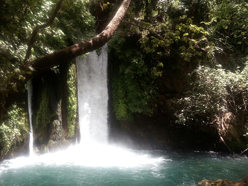
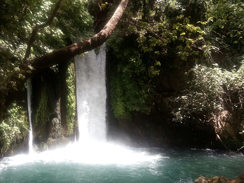
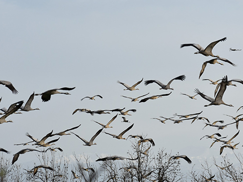
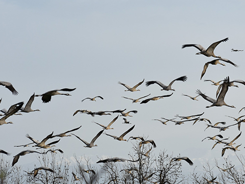

Chorazin
גן לאומי כורזים
About 7 minutes drive from 'Maayan Kasoom'.
נסיעה של 7 דקות מבקתות מעיין קסום
Chorazin was an ancient village in the Roman and Byzantine periods, best known from the Christian Gospels. It stood on the Korazim Plateau in the Upper Galilee on a hill above the northern shore of the Sea of Galilee.
Findings - The main settlement dates to the 3rd and 4th centuries. The majority of the structures found were made from basalt. The town's ruins are spread over an area of 25 acres, subdivided into five separate quarters, in the center the large, impressive synagogue built of basalt stones and decorated with Jewish motifs is the most striking of the surviving structures, in the center. Close by is a ritual bath (mikvah), surrounded by public and residential buildings.
Administered by: Israel National Parks Authority
כורזים היה כפר עתיק בתקופה הרומית והביזנטית, המוכר בעיקר מהבשורות הנוצריות. הוא עמד ברמת כורזים שבגליל העליון על גבעה מעל החוף הצפוני של הכנרת.
ממצאים - היישוב העיקרי מתוארך למאות ה-3 וה-4. רוב המבנים שנמצאו היו עשויים מבזלת. חורבות העיירה פרושות על שטח של 25 דונם, מחולקות לחמישה רבעים נפרדים, במרכזו בית הכנסת הגדול והמרשים הבנוי מאבני בזלת ומעוטר במוטיבים יהודיים הוא הבולט מבין המבנים ששרדו, במרכז. בסמוך נמצא בית מקווה (מקווה), מוקף במבני ציבור ומגורים.
בניהול: רשות הטבע והגנים


 

 
